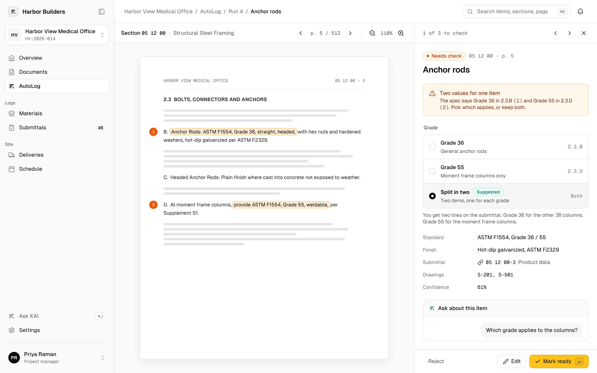
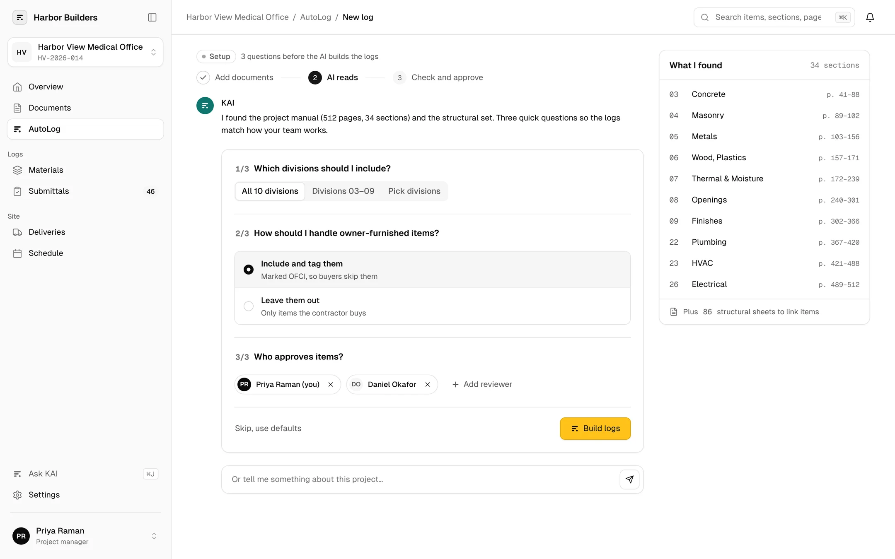
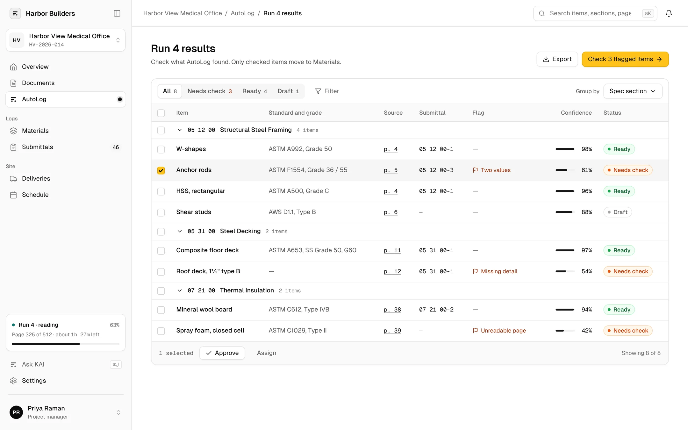
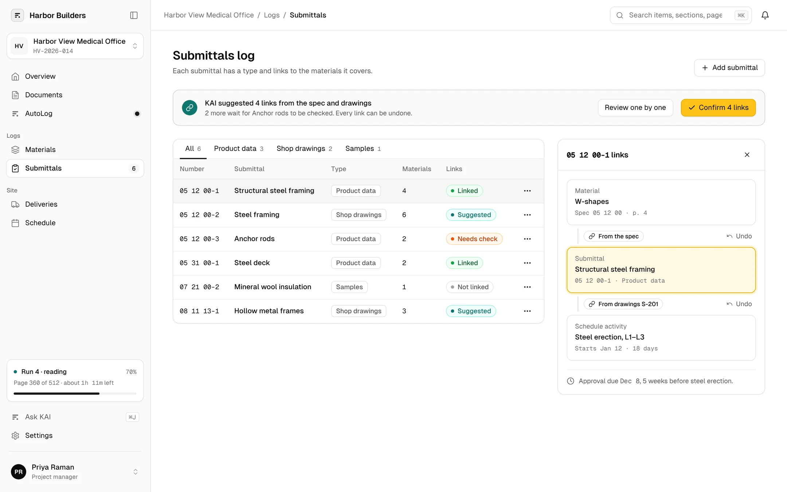
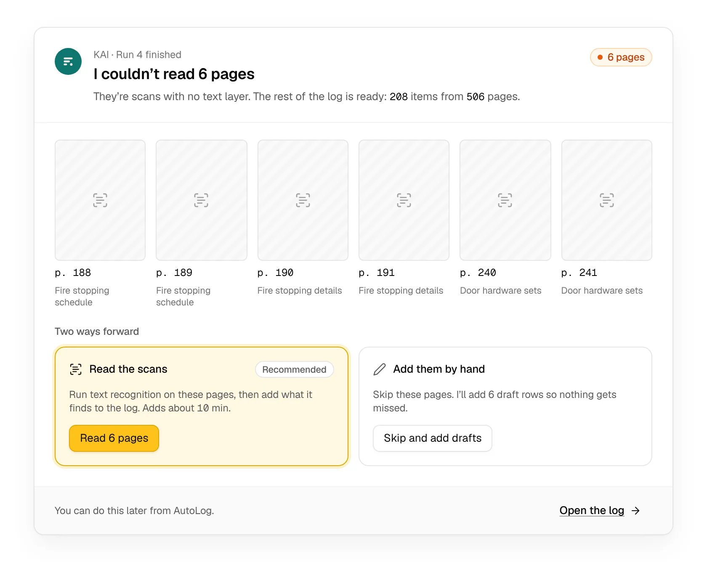

Krane · AI tool · 2026
AutoLog: customers now run it themselves
Only our support team could run this AI tool. I redesigned it so customers start a log on their own, and a person checks every AI record before it goes live.
80+ h → 4–5 h
to build a log
~10×
weekly customer users after V1.5
- Role
- Senior Product Designer, end to end
- Team
- PM, project head, engineering, support team
- Shipped
- V1.5 in August 2026, V2.0 in late September
- Status
- V2.0 live, first customer runs in November
Krane work is under NDA, so all screens use made-up data.
The problem
Building a log was slow, manual and hidden
AutoLog turns construction specs into procurement and submittal logs: what a project has to buy, and what it has to get approved.
500+
spec pages per project
80+ h
of manual review per log
2–4 weeks
before a log was ready
What was wrong with the first version
It needed all three documents before it would start. It forced a rigid five-step flow. And while the AI worked, nobody could see what it was doing.
Research
What I learned before designing
I owned AutoLog end to end: the research, the flow, every screen, the rules for when the AI flags an item, and its prompts with the AI team. Each finding below changed the design.
“They didn’t trust a list unless they could see the page each item came from.”
What I heard from project managers. One wrong grade can mean ordering the wrong steel.
Two rules we set early
With the PM, we agreed that customers run it, not our support team, and that nothing goes live without a person. We shipped in two steps, V1.5 then V2.0, and left automatic approval out of the first release on purpose.
Try it
A working prototype, not a video
Add files, ask KAI, check results and move them to Materials. It uses a small sample project, so you can finish in about two minutes.

Key decisions
Keeping a person in charge of the AI
Four decisions shaped the design. Each one kept a person in charge, and each had a cost.
Decision 1
Clear steps, with chat on the side
Some of the team wanted AutoLog to work like a chat. I built both and showed them side by side. We chose clear steps: buttons appear only when you need to decide, and chat is for questions. A chat gives one long reply that’s hard to check.
Trade-off: less freedom, but results you can predict. Shipped in V1.5.

Decision 2
Nothing goes live without a person
Every record opens beside the passage it came from and stays a draft until someone marks it ready. Ask KAI about a flagged record and it answers with choices, not a prompt to write.
Trade-off: one more step before anything goes live.
I wrote the rules for when the AI flags an item instead of guessing. Each flag has one clear reason, so a person knows exactly what to check.
- Low confidenceIt isn’t sure it read the item right.
- Two valuesGrade 36 in one place, 55 in another.
- Missing detailThe item has no grade or description.
- Unreadable pageThe page is a scan with no text.
Each week, the AI team and I reviewed the results and turned wrong answers into new rules.
Decision 3
Review follows the spec
Records sit under their division and section, the order people already read in, so gaps show up fast. A whole section can be marked ready at once. Flagged records still need a person.
Trade-off: deeper navigation than a flat list.

Decision 4
Items connect themselves
Linking used to be manual. AutoLog knows the section and page of every material, so it suggests the links to submittals and schedule activities. I tested three ways to confirm them. People missed a separate confirm step, so we shipped one Confirm links button, and every link can be undone.
Trade-off: the AI only suggests. A person still confirms each link.

Proposal, not shipped yet
When the AI can’t read a page
Some pages are scans with no text. Instead of skipping them quietly, KAI says which pages it couldn’t read and offers two ways forward.

Outcome
Hours instead of weeks, run by customers
80+ h → 4–5 h
to build a log, in the first customer runs (November 2026). A person still checked every result.
~10×
weekly customer users, 6 weeks after V1.5 vs the 8 weeks before. The rise followed V1.5, but that doesn’t prove it was the only cause.
I count weekly customer users, people outside Krane, because total visits include our own testing. V2.0 went live in late September, and the first customer runs in November got positive feedback.
Looking back
What I’d do next
- I’d change
- Put it in front of customers sooner. Earlier runs would have shown how long a full run really takes.
- I’d test next
- Do people trust the step from draft to ready?
- Left out on purpose
- Fully automatic approval, and duplicate detection and merging. Less automation, so people stay in charge. Confidence scores and AI-suggested activity links came in V2.0.